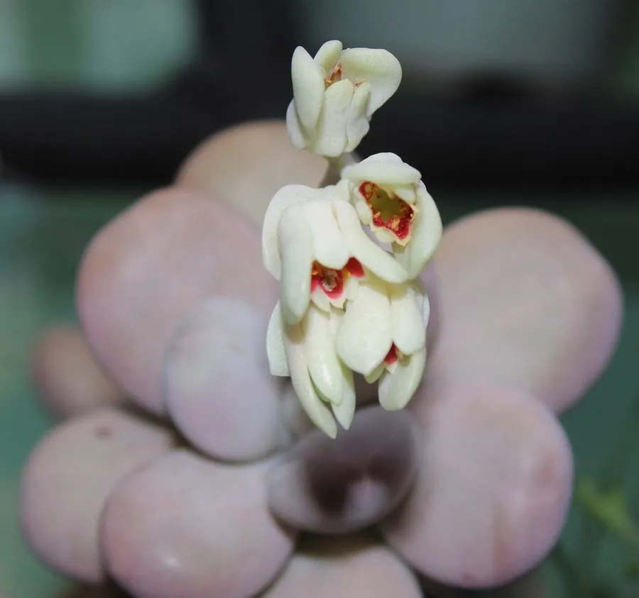

多肉植物 · 植物界
星美人 Pachyphytum oviferum

景天科厚叶草属小型多肉，叶片卵圆肥厚、覆白色粉霜，形似鹅卵石，光照充足时泛粉红，原产墨西哥。
- 分类
- 门被子植物门纲木兰纲目虎耳草目科景天科属厚叶草属
- 栖息环境
- 墨西哥中部干旱高原的石质坡地，喜光、干燥、通风
- 地理分布
- 原产墨西哥中部，世界各地盆栽栽培
- 保护级别
- 暂无评估
物种志
星美人为景天科厚叶草属小型多肉植物，株高 10–15 厘米，茎短粗，叶片互生、紧密排列，呈卵圆形或倒卵形，长 3–5 厘米，肥厚多汁，表面覆盖一层白色粉霜，宛如鹅卵石。花春季开放，花梗自叶腋抽出，花小，橙红色，钟形；果实为蓇葖果。
星美人原产墨西哥中部的干旱高原，喜阳光充足、凉爽干燥的环境，耐旱而不耐湿热，夏季高温时生长缓慢。叶片表面的白粉层可反射强光、减少水分蒸发，同时保护叶面；浇水时尽量避免冲掉白粉，否则叶面会留下斑痕。充足光照和较大温差能让叶片泛起粉红色或橙黄色，它常用叶插或枝插繁殖，叶插时把完整叶片平放在颗粒土上即可。
形态与习性
- 株高10–15 厘米，茎短粗
- 花期春季，花小，橙红色钟形
- 果期花后结蓇葖果
- 光照喜充足阳光，夏季适度遮阴
- 水分耐旱，见干见湿，忌积水
- 土壤颗粒为主、排水良好的矿质土
- 繁殖叶插、枝插
趣味知识
- 星美人叶片覆盖的白色粉霜可反射强光、减少水分蒸发，浇水时尽量别冲掉。
- 叶片肥厚如鹅卵石，英文名意为“月光石”，形容其圆润光洁。
- 光照充足、温差较大时，叶片会由灰绿转为粉红或橙黄。
- 叶插时要保留完整的叶片基部，否则难以生根发芽。